Chapter 8
Training experiment
8.1 Introduction
That positional play cannot be learned in one day is something we have established already. Before one can claim to have played a game according to the correct strategic lines, one should first delve deeply into the problems of middlegame positions.
As a trainer I have noticed that acquiring knowledge and understanding of this matter is not an easy task. It is especially important to label the main themes in a position correctly, and to study several related examples. And even if the subject is clear, that is not to say that you will be able to apply the newly-acquired insights correctly on the next occasion. In this chapter I hope to tell you a little bit more about what we can do about this.
8.2 Good knight versus bad bishop
In Chapter 2 I dished up a position from the game Fischer-Gadia, Mar del Plata 1960, for you. To refresh your memory, we started with the following position:
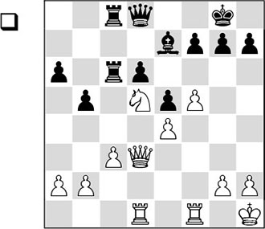
From here White won the game because he had the huge advantage of good knight versus bad bishop. In Chapter 9 we will go deeper into creating and building upon such types of advantage. In my work as a trainer I have spent a lot of time on this theme. For players who have to further develop their strategic understanding, the theme of strong squares can provide a lot of insight. In my opinion, this subject lends itself perfectly to the development of a ‘feeling’ for positional play.
With a quite considerable number of players, teaching an entirely different line of thinking turns out to be necessary in order to make real progress. It is my experience that many club players immediately start to calculate when they are looking at a position. They see ‘loose moves’ – variations. Such players find it difficult to develop a coherent concept. But in positional play, everything revolves around making plans and long-term thinking.
A line of thinking where a player looks schematically at a position is indispensable for such an endgame. In this light, it is not surprising that in my own games I often get the advantage of good knight versus bad bishop. It’s not only that the subject has always held my interest, but if you spend much time on it, you will also automatically get it on the board more often.
As a result, I have built up a certain reputation in this area in Holland – with youth players. And this stimulated me to accumulate a certain amount of exercise material on this subject and at least to take care that my pupils are familiarized with these problems. I was pleased every time I was sent a game where a pupil had succeeded in getting the theme on the board. And it was even better when that pupil had managed to score a point with it. Such things would allow me to sit back and smile with satisfaction.
8.3 The balance between strategy and tactics
A position that is winning for a grandmaster, does not have to be winning at all for an inexperienced player. I myself have learned a lot by playing through games by strong players that had been annotated by themselves. For example, in my youth I picked up a lot from the book The Art of Chess Analysis by Jan Timman. It was interesting for me to watch a strong grandmaster like Timman describe how he unravelled the problems in a position. I found it instructive how he sometimes managed to gain complete control of a position on the basis of a superior pawn structure.
I miss this strategic depth a little with many modern players. It is no rarity to find players flashing through games at high speed with their finger on the cursor key of their laptop. Sometimes I ask them if they can explain to me in words what happened in that game. And before they can give an answer, I ask them if they think they can understand within a few seconds the deeper backgrounds of a game on which two strong players have spent more than four hours thinking time.
These days chess has become much more dynamic. The sharpening of the struggle was initiated by Kasparov, and under the influence of players like Topalov and Shirov, attacking play has experienced a boom. But it always turns out that more strategically inclined players, such as for instance Kramnik and Giri, can hold their own at the highest level.
Actually, both types of player are able to turn their hands on both styles. For even though Shirov has the reputation of being a tactician par excellence, there are plenty of games where he outclasses his opponents with small positional means. And from Kramnik we know that, although he likes to steer the game into strategic waters, he can also produce magnificent attacking games. Precisely with such great players, the balance between strategy and tactics is perfect.
8.4 Training experiment
The above reflections lead us to the following game, which I have used for an interesting training experiment.
SI 14.8 (B90)
1.e4 c5 2.♘f3 d6 3.d4 cxd4 4.♘xd4 ♘f6 5.♘c3 a6 6.♗e3 e5 7.♘f3 ♗e7 8.♗c4 0-0 9.0-0 ♗e6
This was a fashionable variation for a while, where both players engage in a dispute for the d5-square.
10.♕e2
White usually plays 10.♗b3 here, which mostly leads to a position similar to the one in the game. By opting for this move order, Polgar provokes an action with …b7-b5, which may give her an important target later in the game, as we have seen in the game Fischer-Gadia.
10…b5 11.♗b3
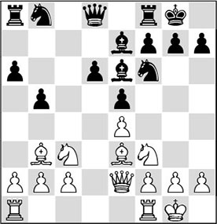
11…♗xb3?
GM Baburin writes: ‘This gives White more control in the centre and must therefore be considered very risky strategically.’ I would like to put it more strongly: this swap is a big strategic mistake, especially for a player of Anand’s calibre.
A tactical blunder would be 11…♘bd7??. After 12.♗xe6 fxe6 13.♘g5, Black loses a valuable pawn. The alternative 11…h6 is known from several games.
12.axb3
It is clear that Black will have problems with the d5-square. Moreover, White has gained control of the half-open a-file, and – as indicated above – the vulnerability of the queenside pawns may play a role.
12…♘bd7 13.♖fd1 ♕c7
Probably 13…h6 should have been preferred, although this involves a weakening of the kingside. Now Judit engages in a battle for the d5-square.
14.♗g5 ♖fc8
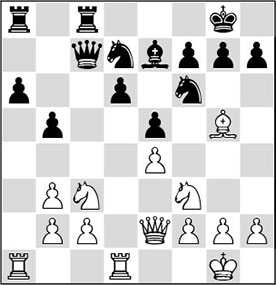
15.♘e1!
Protecting the pawn on c2 in a flexible way, so White can get on with her siege of the d5-square. The usual counterplay in the Sicilian, achieved by pressure on the c-file, is hereby reduced to a minimum.
15…♕b7 16.♗xf6 ♘xf6 17.♘d5 ♘xd5 18.♖xd5
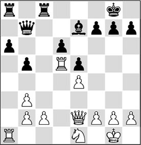
The white player has managed to occupy the d5-square with a piece. Furthermore, she has achieved the ideal material balance: good knight versus bad bishop. The knight ‘only’ needs to be repositioned now, in order to increase the pressure on Black’s position. Of course the knight should not be exchanged for the bishop.
18…♖c5 19.♖ad1 ♖xd5 20.♖xd5 ♖c8
According to Baburin, Black could have played 20…b4, fixing the pawn on c2 and creating counterplay along the c-file, but he immediately adds that this move would weaken even more light squares.
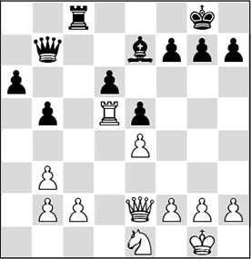
21.c3!
A beautiful, strategically sound move with several intentions. For example, Polgar prevents Black obtaining counterplay on the c-file, and she vacates the c2-square for the knight, which can now head for the beautiful square d5.
21…b4
21…♖c5 is simply met by 22.♖d1, when Black cannot liberate himself with 22…d5? in view of 23.b4!, winning the pawn on d5.
22.c4 g6 23.g3 ♖c5 24.♖d1 a5 25.♘c2 ♔g7 26.♕d3 ♖c6 27.♘e3 ♕c8 28.♔g2 ♕e6 29.♕e2 ♗d8 30.♘d5
The knight has arrived on the d5-square, enabling White to get a firm grip on the position. Thus, she has achieved the main strategic aim of putting the knight on the strong d5-square, versus a bad bishop. To make further progress White will have to set up an attack, making full use of this strong knight.
30…♖c5 31.♕e3 ♗e7 32.♖d3 ♗d8 33.♕d2 ♖c6 34.♕d1 ♔g8 35.h4 ♔g7
Sometimes, adopting a wait-and-see attitude is the right approach. But here Black shouldn’t have waited while White makes further progress on the kingside. Better was 35…h5.
36.h5
This follows Nimzowitsch’s strategy to create two (or more) weaknesses.
36…♗g5 37.♕f3 ♖c8 38.♖d1 ♖c6 39.♕e2 ♖c8 40.♖h1 ♔g8 41.f3
A subtle continuation, with which Polgar intends to realize several ideas. She has vacated the f2-square for the queen (to introduce ♕f2-a7 into the position), and the queen can also be deployed on the other side of the board (♕e2-f2-g1-h2).
41…♖b8 42.♕f2 ♖b7
Anand also achieves a sound set-up. The rook prevents the penetration of White’s queen on the queenside, and at the same time it (indirectly) keeps an eye on h7.
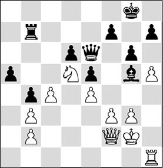
43.hxg6 fxg6
After the recapture with the other pawn, 43…hxg6, White can realize her other idea with 44.♕g1. After 44…f5 (or 44…♗f6 45.♕h2 ♗g7 46.♕h4! ♖b8 47.♖a1!, and Black will not be able to keep his position together) 45.♕h2 ♗f6 46.♕h6 ♗g7 47.♕g5 ♖d7 48.♖a1, Black again has no answer to White’s play on two wings.
44.c5!
Now that the black kingside has been weakened, White turns to the queenside.
44…dxc5 45.♕xc5 ♗d8 46.♖c1 ♔f7 47.♕e3 ♔g7 48.♖c4 ♖d7 49.♕c1
Polgar systematically increases the pressure. She keeps a permanent grip on the position and does not allow any counterplay. Black is condemned to reacting.
49…h5 50.♖c6 ♖d6 51.♖c8
Slowly but surely, the white pieces force an entry into the black position. The black bishop is still utterly powerless.
51…♕d7 52.♕c5 ♔h6
An interesting counter was 52…♗b6. However, White plays 53.♕c4, keeping total control of the position. Only not 53.♘xb6 ♖d2+ 54.♔g1 ♖d1+ 55.♔g2 ♖d2+, and Black escapes with perpetual check.
53.♖b8
Judit remains focused on preventing her opponent’s counterplay. By the way, she could also have opted for 53.♖a8, since 53…♗b6? will end badly for Black after 54.♕c1+ (certainly not 54.♘xb6? ♖d2+ and Black again achieves perpetual check) 54…♔g7 55.♕g5 ♗d4 (or 55…♖e6 56.♘xb6 ♖xb6 57.♕xe5+ ♖f6 58.♖a6, and White wins. After 55…♕e6 56.♘xb6 ♖xb6 57.♖a7+, all resistance is also broken) and now 56.♘e7! is very strong, with the original follow-up 56…♔f7 57.♘g8!, and Black runs out of moves.
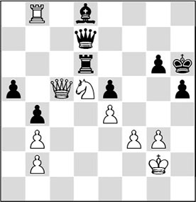
53…♗f6
Curiously, after the extremely ‘ugly’ move 53…g5, the position does not offer an immediate decision. True, Black puts another pawn on the wrong colour, but at the same time he rules out the annoying ♕c1 check. Presumably White should now try to exchange all the major pieces, since the knight versus bishop ending almost certainly wins: 54.♖a8 ♗b6 55.♕c4 ♗d8.
On 53…♔g7, 54.♖b7! ♕xb7 55.♕xd6 is a favourable liquidation for White. The combination of queen plus (strong) knight will beat the queen-(bad) bishop tandem.
54.♕e3+ ♗g5?
A mistake in a lost position. But also after the superior 54…♔g7 White would be virtually winning with 55.♖a8!.
55.f4!
This push, which Judit has postponed as long as possible, as she didn’t want to make her own king vulnerable, now comes with great power.
55…exf4 56.♖h8+
1-0
Anand surrendered, as he had also seen that after 56…♔g7 57.♕d4+ ♗f6 White strikes home with the beautiful sacrifice 58.♕xf6+! ♖xf6 59.♖h7+ ♔xh7, and the knight has the final word: 60.♘xf6+ ♔g7 61.♘xd7.
What is so instructive about this game? A tactically very proficient player by nature like Judit Polgar manages to force no less an opponent than Viswanathan Anand into a strategically hopeless position. Then an endless manoeuvring phase follows, where Judit strengthens her position step by step. The first task she sets herself is to play her knight via e1 to d5, after which she holds the position in a firm grasp. When she has managed to put her knight on the dream square by subtle manoeuvres, a new phase is entered.
In this phase she succeeds in creating weaknesses for the opponent on two wings. Black is forced to pull out all the stops in order not to be overrun, and then Polgar opens the position along the c-file, where she then reigns supreme. All her actions are in the style of the great masters, of whom Tigran Petrosian is probably the shining example. Without allowing a shred of counterplay, she increases her advantages. When Anand is brought down to his knees and makes a tactical mistake at the end, Polgar turns the switch and tackles him with a magnificent tactical turn. It is no mean feat to render a great player like Anand powerless like this, but Polgar has managed to produce a virtually perfect game.
I wondered if this wouldn’t be highly instructive for four youth players that I trained in a group, as part of a project sponsored by the Stichting Bevordering Schaaksport Nederland (Dutch Foundation for the Promotion of Chess). I was to train and coach four talented 12-year-old boys for about three years. Since the hours of contact were relatively scarce, and the travelling distances were relatively large, I decided to strive for a high training intensity by playing out the position below against them via email.
The youngster had White and I was going to defend this position with black. Of course, they were meant to try and convert their indisputable advantage in this position into other concrete advantages. For this purpose, I had looked at various examples with them, and given them exercise material on the subject at home. I could expect them to be well-prepared!
The arrangement was that at least three to five times a week a move would be played, and that they would put this position on the board at home, in order to imitate a normal game situation as closely as possible. Additionally, it was arranged that they obviously wouldn’t use a computer (i.e., no engine, and no consulting databases either). Of course I had to rely on their honesty, but I was sure I could count on that, since all four of them were very ambitious boys, and of course they knew that they would only be fooling themselves.
Since I would have to defend a bad position in four games at a time, I had arranged that I would sporadically turn on a chess computer if waging the defence would become too much for me to handle. For this purpose I now and then used the chess program ‘The King’, an engine that had been built into the database program Tascbase; unfortunately this is a DOS-program that cannot be used nowadays under the newest Windows versions. By the way, the program wasn’t of much help to me, since we had a predominantly strategic position, in which the program frequently gave wrong assessments. To be honest, I have to say that in one game, where the position suddenly exploded and things got very tactical, the computer put me on the right track and I found the right way to play.
Of these four talents, three have developed very strongly many years later. Wouter Spoelman and Twan Burg have become grandmasters, and Vincent Rothuis an international master. The fourth, Egbert Clevers, gave priority to his professional education, but he is still a respectable club player.
The latter, by the way, withdrew from the project after one year, and he was replaced by the 13-year-old Ali Bitalzadeh, who also bagged the international master title later.
That this group became so successful was in the first place the merit of the players themselves. All four of them were highly motivated to focus entirely on their chess study, and they invested many hours in it. Besides, they had not been selected for nothing – their talent had stood out before. It was the task of the trainer to set them to some sound work, and playing out this game was one of the routines that I opted for.
Below I give the four games that were played, with the comments and analyses that we made afterwards.
1.b4!?
Wouter meets one criterion in this position, namely preventing Black’s counterplay along the c-file. The downside of this move is that the b4-square is no longer available for the knight.
1…g6 2.♕d3?!
The queen is in the way here, since the rook will later have to vacate the square d5 for the knight.
2…♖c6 3.c3 ♕c8 4.g3 ♕e6 5.♘c2 ♗d8
Wouter Spoelman
Black can allow the knight on e3 for the moment, since it cannot jump to d5 right away.
6.♔g2 ♔g7 7.♘a3
A strange move at first sight, but White is already realizing the intended plan. He is now planning to support the push c3-c4 and hopes to get the knight on d5 after all, via b1-c3.
7…h5 8.b3?!
White doesn’t anticipate his opponent’s actions. He should not allow his kingside to be weakened.
Necessary was 8.h4.
8…h4 9.c4 ♗b6 10.h3
Not a pretty move, since the white king will now feel the ‘draught’.
10…hxg3 11.fxg3
Now, the second rank has been opened, and this does not help White. Also, the centre is undermined and White is losing his grip on it.
11…f5 12.♘b1
If Black does nothing, it appears as if White will be able to realize his ideal (the knight to d5) after all.
12…fxe4!
But Black continues with his strategy of swapping as many pawns and active pieces as possible.
13.♕xe4 ♕f5 14.♕xf5 gxf5
Slowly the pawn structure is beginning to favour Black.
15.♘d2
The knight will not get there, and this means that the position is balanced.
15…♔f6 16.♔f3 ♗d4 17.g4!
A good move, with which White tries to ‘retake’ the light squares.
17…♗c3!
Black is now glad to get rid of his bad bishop, otherwise the knight will get to e4.
18.gxf5 ♗xd2
After 18…♗xb4 19.♘e4+ ♔xf5 20.cxb5 axb5 21.♖xb5, a draw would also be the most probable outcome.
19.♖xd2 ♔xf5 20.♔e3 bxc4
Draw agreed. Neither side can play for a win.
1.♖d1 g6 2.c3!
Vincent succeeds in finding the right plan.
2…b4
Thus Black prevents White from playing b3-b4 himself. The knight can now only reach the square d5 via e3, and Black tries to keep this square under cover with his bishop.
3.c4 ♖c6 4.♘c2 ♗g5 5.♕g4 ♗f4?!
In fact this move was based on a miscalculation.
6.g3 ♗h6
I had planned 6…h5 now, but here I realized that this would be strongly met by 7.♕h4 ♗h6 8.g4!. Black would then have been in big trouble.
7.♕h4 ♗f8
It’s a sad story that the bishop has to go to this bad square; and the knight can still get to d5.
8.♘e3 ♗e7 9.♕g4 h5 10.♕e2 ♔g7 11.♘d5
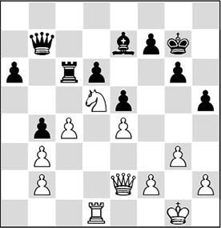
White has fully realized the plan of taking the knight to d5.
11…♗d8
Trying to sabotage the white pawn structure with 11…h4 would backfire here. White would soon take control of the h-file, with disastrous consequences for Black: 12.♕g4 hxg3 13.hxg3.
12.h4!
Vincent has played very strongly so far. He does not allow Black to play …h5-h4.
12…a5
Another pawn on the wrong colour, but here this isn’t so bad. In the right circumstances, Black will threaten …a5-a4.
Vincent Rothuis
13.♔g2 ♕c8 14.♖a1
White plays very prophylactically. With the text move he wants to rule out the possibility of …a5-a4. In the long run he will have to work with the f2-f4 push.
A positionally attractive move (like in the stem game Polgar-Anand) would fail here for tactical reasons: 14.♕e3? ♗xh4, and now 15.gxh4?? is not possible in view of 15…♕g4+.
14…♕e6 15.f3
Now 15.♕e3 would have been a good option.
15…f5 16.exf5!?
I would not have played this myself, but it works out well. White voluntarily gives up his control of the light squares, and he also mobilizes the black pawn centre, making the bishop better than it is now. The upside is that Black’s king position becomes exposed, as a result of which Vincent gets chances against the enemy monarch.
16…gxf5 17.f4
This was the intention, but his rook is a little offside.
17…♔h6
Not to g6, in view of tricks with ♘f4+.
18.♕d2?!
White should now have consistently continued opening up the position. After 18.fxe5! dxe5 19.♖e1 e4 20.♖d1!, Black would have had great problems avoiding material loss.
18…e4 19.♕d4 ♔g6

Black cannot prevent the white queen from paying a visit.
20.♕h8?!
The right idea in the wrong move order! With 20.g4!, White could have seized his chance: 20…hxg4 (20…fxg4? does not work in view of 21.♖f1 ♕f5 22.♘e3, and the attack runs smoothly) 21.♕h8 ♖c8 22.h5+ ♔f7 23.h6, and the white passed pawn decides the battle.
20…♖c8 21.g4?
An incredible pawn sacrifice that only barely fails to work in White’s favour. White had another trick at his disposal, namely: 21.♖xa5 ♗xa5 22.♕xc8 ♕xc8 23.♘e7+ ♔f6 24.♘xc8 ♔e6 25.♘a7, but Black certainly doesn’t have to lose after 25…♔d7.
21…fxg4 22.♕f8?!
White is now really starting to gamble, allowing Black to save his skin thanks to a cunning defence. 22.f5+ ♕xf5 23.♕g8+ ♔h6 24.♕h8+ would have forced a draw, but Vincent tries for more.
The difference is that after 22.♖f1, Black has 22…♗xh4! available. After 23.f5+ ♕xf5 24.♘f4+ ♔f7 25.♕h6 ♗g5 26.♕xh5+ ♔g7, Black escapes his dark fate by the skin of his teeth.
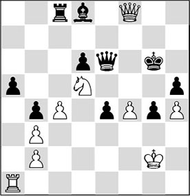
22…♗xh4! 23.f5+ ♔h7!!
This is just possible, and now Black is better. 23…♕xf5?? would lose material after 24.♘f4+ ♔g5 25.♕g7+ ♔xf4 26.♖f1+.
24.fxe6 ♖xf8 25.e7
Here 25.♖xa5 offered good chances of salvation: 25…♖f2+ 26.♔g1 ♖xb2 27.♘f4!, and it looks as if Black cannot win.
By the way, not 27.e7?, as after 27…♖b1+ 28.♔g2 ♗xe7 29.♖a7 ♖xb3 30.♖xe7+ ♔g6 31.♖xe4 ♖b2+ 32.♔g1 (32.♔g3?? ♔g5!) 32…b3 Black retains every chance of winning.
25…♖e8 26.♖xa5 ♔g7 27.♘f4 ♗xe7 28.♘xh5+ ♔f7 29.♔g3
In the following, the black e-pawn will become strong, as the rook is already ideally placed and the bishop has the colour of the promotion square e1!
29…e3 30.♔xg4?
But this is the decisive mistake. The only move was 30.♖f5+ ♔e6 31.♘g7+ ♔d7 32.♖f1 (32.♘xe8?! ♗h4+! 33.♔xh4 e2 34.♘f6+ ♔c6, and the pawn queens) 32…♖g8 33.♘f5, and now the point could probably be shared.
30…e2
Vincent resigned here. He had missed that in the variation after 31.♖a1, Black would play 31…♗h4!. The ending after 32.♔xh4 e1♕+ 33.♖xe1 ♖xe1 is indeed prospectless for White.
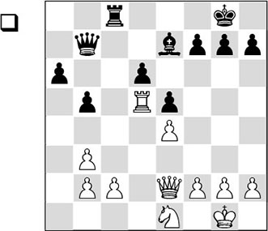
1.g4?!
Another pawn moves to the right colour, but White shouldn’t overdo things. The weakening of the dark squares will later prove to work against White.
The idea to play the knight via g2 to e3 is nice, but for that purpose he has to be able to kick the bishop from g5. If White wants to pursue this plan, 1.g3 is more normal.
1…b4
Perhaps I should have preferred …♖c6 first, making …♗d8 and …♗b6 possible.
2.♘g2 ♖c5 3.♘e3
Perhaps it would have been better to play 3.♖d2 first.
3…♗g5 4.♖xc5
Thus White gets a knight on beautiful light squares, but it’s a pity that he rids Black of his weak backward pawn.
4…dxc5 5.♘c4
More logical might have been 5.♘d5, getting his knight on d5 after all. White would preserve the c4-square for his queen in that case.
5…♕e7 6.♕d1 ♕e6 7.f3
The white kingside is slightly weakened, although this is of little consequence.
7…h5 8.h3 ♕f6 9.♔g2 ♕f4
White gets no time to make optimal use of his queen.
10.♕e1
Also after 10.♕d6 ♕c1, Black would have sufficient counterplay.
10…g6 11.♘b6 ♔g7 12.♘d5 ♕c1
Now Black does want to trade queens.
13.♕xc1 ♗xc1 14.♘c7 a5
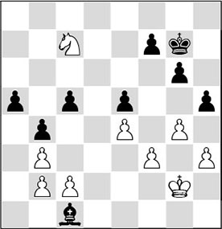
15.♘a6?!
This move causes problems for White. Black will get a dangerous a-pawn. As we know, the rook pawn is the arch-enemy of the knight.
With 15.♘e8+! ♔f8 16.♘d6 ♗xb2 17.♘c4 ♗d4 18.♘xa5, White could have obtained a pure good knight versus bad bishop ending. Winning this ending would be difficult, as his king probably wouldn’t be able to enter Black’s position. But White is the only one who can play for a win here, and Black has to sit and wait. After the text move, things are completely different!
15…♗e3 16.♘b8 c4! 17.bxc4?
Twan Burg
This move is going to cause White lots of worries. The only move to keep the balance was 17.♘c6! cxb3 18.cxb3 ♗d4 19.♘xa5 ♗xb2, and also here White could never lose – he can even play for a win.
17…a4 18.♘a6 a3 19.bxa3 bxa3 20.♘b4 ♗c5 21.♘a2
The knight is now inactive, and Black brings his king into play.
21…♔f6 22.♘c1 ♔g5 23.♘b3
Also after 23.♔g3 h4+ 24.♔g2 ♗d4, White cannot prevent the black king from making an entrance.
23…a2 24.♘a1
24.c3 is no solution, as after 24…h4 25.♘a1 ♔f4 26.♘c2 ♗b6 27.♘a1 ♔e3, the king invades devastatingly.
24…♗d4 25.♘b3
The desperate attempt 25.c5 would be quickly refuted by 25…♗xa1 26.c6 ♗d4 27.c7 a1♕ 28.c8♕ ♕g1#.
25…a1♕ 26.♘xa1 ♗xa1 27.c5 ♗d4 28.c6 ♗b6
0-1
1.♕d3
This move does nothing for the plan to play the knight to d5.
1…b4 2.♖a5 ♖c6 3.g3 g6 4.h4
Otherwise, White has built up his position quite neatly.
4…♗d8 5.♖d5 ♗b6 6.c4 bxc3
Black gladly exchanges as many pawns as possible, making his bishop better and better.
7.bxc3 ♗a7!
Black takes up a wait-and-see attitude, in the meantime trying to create counterplay for his major pieces.
A not entirely sound alternative was 7…f5 8.exf5 ♖xc3 9.♕xc3 ♕xd5 in view of 10.♕c8+, after which White is somewhat better.
8.c4?!
With the modest 8.♕c2, White could have maintained the balance. Now he will get into trouble.
8…♖b6 9.♖xd6 ♖xd6 10.♕xd6 ♕xb3
There was something to be said for 10…♕xe4.
11.♕xe5 ♕xc4 12.h5
And now White should have opted for the drawing line 12.♕e8+ ♔g7 13.♕e5+.
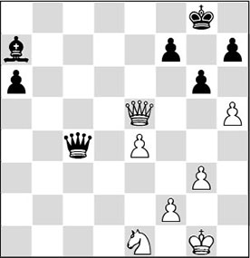
12…♕d4 13.♕xd4?!
It is very risky to enter an ending where the opponent has an outside passed pawn against a knight. It would have been better to keep the queens on the board with 13.♕e8+ ♔g7 14.h6+ ♔xh6 15.♕xf7, when chances are again equal.
13…♗xd4 14.♘c2 ♗c5 15.hxg6 hxg6 16.♔f1 ♔f8 17.♔e2 ♔e7 18.f3 ♔e6 19.f4 a5 20.g4?!
20.♔d3 was preferable.
20…g5
Despite the reduced material, Black’s winning chances are considerable.
21.fxg5 ♔e5 22.♔d3 a4 23.♔c4 ♗e7 24.♘d4 ♗xg5 25.♘f5 ♗d2 26.g5 ♗xg5 27.♔b4 ♗f4 28.♔xa4 ♔xe4 29.♘e7 ♗d6

White has defended like a lion, but still he cannot reach the safe haven of a draw.
30.♘c6
After 30.♘g8 f5 31.♘f6+, Black continues with 31…♔e5! 32.♘h5 ♔d5!!. The knight on h5 is now dominated by the bishop in all lines, and the black king will collect it next. 33.♔b3 (33.♘f6+ ♔e6 34.♘h7 (34.♘h5 ♗e5 – domination!) 34…♗e7 – domination!) 33…♗e5! (domination!) 34.♔c2 ♔e4 35.♔d2 ♔f3 36.♔e1 ♔g4.
30…f5 31.♘a5
Also after 31.♘d8 ♗e7 32.♘e6 ♔e5 33.♘g7 f4 34.♘h5 f3 35.♘g3 f2 36.♔b3 ♔f4 37.♘f1 ♗g5! 38.♔c2 ♔f3 39.♔d3 ♔g2 40.♔e2 ♗f4, after the umpteenth domination, the curtain falls definitively.
31…♔d3!
0-1
What conclusions should we draw from this? The results are rather disappointing for the young talents. But after the games I immediately put this into perspective for them. One by one they had played well in certain phases of the game. This is another important thing when coaching players: you should turn their mistakes and omissions into something positive. Thus, I would never utter the word ‘wrong’ as a matter of principle. I would rather speak of a ‘learning opportunity’.
In the collective analysis afterwards, it became clear that Vincent should even have won, and that the others certainly wouldn’t have lost if they hadn’t tried so hard for a win.
By the way, this fighting spirit does them credit; I had told them that they would develop their play if in their games they would fight on in positions that looked ‘equal’. Today it is not easy to learn good endgame technique, as many games must be rattled off at an accelerated tempo, under great time pressure. However, it is precisely the analysis of endgames that is highly instructive, and I remember that my teacher Cor van Wijgerden always said that you will play the middlegame better if you have a better understanding of the endgame.
There is one important lesson to be drawn from these four training games: three of the four boys didn’t manage to get a knight on d5 without any relevant changes in the structure. Twan Burg could have played his knight there, but then he had already swapped rooks on c5, and solved the weakness of the pawn on d6.
I have explicitly tried to demonstrate the patience and subtlety of Polgar’s play, which is necessary in such a position. A second point of improvement was that, when Polgar had finally settled the knight on the strong square, careful manoeuvring was still required. The strategy of playing on both wings, creating two weaknesses, was deemed highly instructive by all four pupils.
But also in the analysis it turned out that the inclination with these 12-year-olds to ‘start some action’ had to be suppressed in this type of position. Otherwise, I only wanted to stimulate the youthful zest they all had! In any case, it was useful to see how Polgar only made a ‘raw pawn move’ like f3-f4 when it won almost on the spot.
Imagine my surprise when a few years later I paid a visit to the Amsterdam Chess Tournament. When I entered the playing hall I looked at the demonstration boards, with the positions of the games that were being played. Before I got the opportunity to look closer at any of the games, I noticed a broad grin on the face of the still very young Wouter Spoelman. With a 2277 rating he was up against the slightly older, also very talented Dutch master Erwin l’Ami, who then had a FIDE rating of 2486 to his name. A few years later l’Ami even became a strong grandmaster, who managed to achieve a 2600+ rating.
After I had cast a glance at the demonstration board, I immediately understood why Wouter looked round the room with such a big smile on his face.
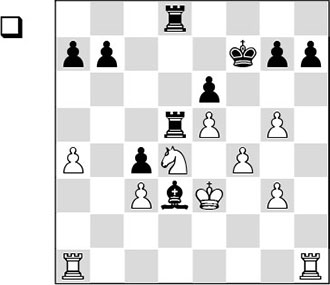
In this position the proud knight is sure as fate on d4. Black has a bishop, of which he cannot really make any good use. With his following move
1.♖h2!
White activates one of his two rooks. This way he hopes to increase the pressure along the b-file, and possibly also on the c4-pawn.
1…♖8d7 2.♖b2 ♗f5
Black’s powerlessness can already be felt.
3.a5 ♖xd4
A desperate attempt, and White makes short work of it. If Black had sat and waited with, for instance, 3…♖c5, he would also have lost slowly but surely after 4.♔f3 ♗d3 5.g4 ♔e7 6.♖a4.
Erwin I’Ami
4.cxd4 c3 5.♖b5 b6 6.axb6 axb6 7.♖xb6 c2 8.♖c6 ♖b7 9.g4 ♖b3+ 10.♔d2 ♗xg4 11.♔xc2
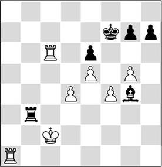
And White had robbed the position of all prospects for Black. On move 60 Spoelman had conquered his master scalp. When I congratulated him on his win after the game, he replied: ‘You taught me!’ There is no greater compliment for a trainer, I guess…